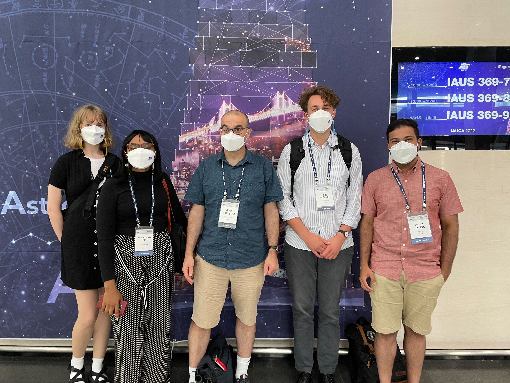
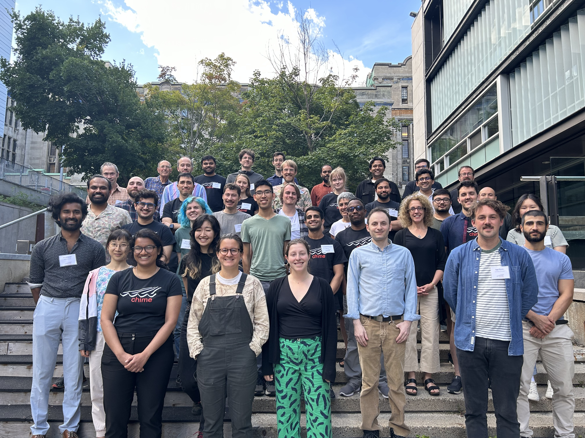
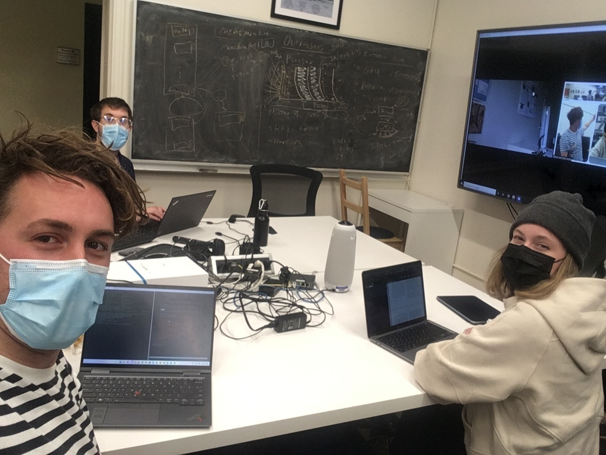
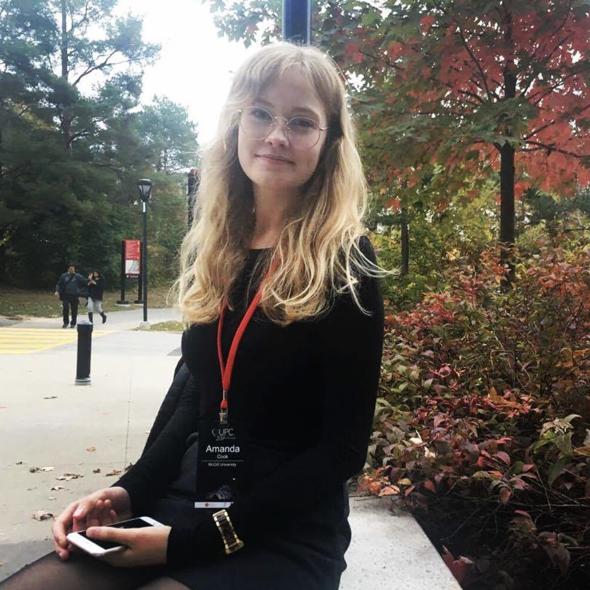
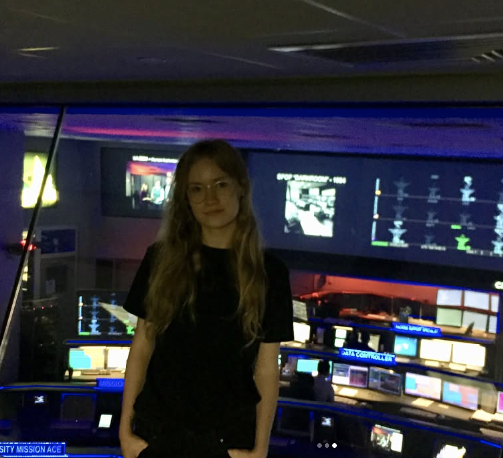

Curriculum Vitae
If the PDF does not load, you can open it in a new tab .
Education / Bio
Short Bio
I am a Banting postdoctoral fellow at the Trottier Space Institute & Physics Department at McGill University and hold a guest affiliation at the University of Amsterdam's Anton Pannekoek Institute for Astronomy (UvA API). I am also a foundational member of the CHIME/FRB Collaboration. My research interests include fast radio bursts, high-energy follow up, and circumgalactic media, particularly in the context of astrostatistics. I also currently hold the record for most FRB sources discovered during a PhD. I received my PhD in Astrophysics from the University of Toronto in 2025, and an honours BSc in mathematics and physics from McGill University in 2019. As an undergrad I held a variety of summer research positions including at NASA JPL and the University of Kyoto.
Doctoral
I received my Ph.D. in Astronomy and Astrophysics from the David A. Dunlap Department of Astronomy and Astrophysics at the University of Toronto in January of 2025. My thesis was entitled "Fast Radio Burst statistics in time and space: FRB repetition patterns and the Milky Way’s plasma probed by CHIME/FRB" and it was supervised by Prof. Gwen Eadie, Prof. Bryan Gaensler, and Prof. Paul Scholz. It can be found here .
I was a member of the CHIME/FRB collaboration throughout my Ph.D., and was one of two trainees funded by a Canadian Statistical Sciences Institute Collaborative Research Grant (CANSSI CRT) which was awarded to Gwen, Bryan, Prof. Derek Bingham, and Prof. David Stenning to work on novel statistical problems posed by CHIME/FRB's unique design.



Undergraduate
I was an undergraduate student at McGill University from 2015-2019, where I was enrolled in the Joint Honours Mathematics and Physics program. In the summer of 2017, I worked with Prof. Ken Ragan (McGill) on my first ever research project which was a study of a crab-like young pulsar using Fermi-LAT data. This work ended up in an undergraduate research journal.
The following summer, I worked as a Caltech/NASA JPL summer intern with Dr. Walid Majid and Ph.D. students Aaron Pearlman and Chris Bochenek. Originally the project was to search for FRBs in 1000 hours of data from the Deep Space Network's 60m radio telescopes. I started with a rough calculation however, and we discovered because of the very small field of view of the telescope, despite the huge amount of hours and sensitivity, we really didn't expect to find any FRBs in that dataset. A search confirmed this. I instead worked on a multi-wavelength (radio, X-ray) campaign to monitor the recently reactivated Galactic radio magnetar PSR J1622-4950.
Upon my return to McGill University that fall, given my new background and interest in fast radio bursts, magnetars, and X-ray and Radio observations, it was only natural that I began to work with Prof. Vicky Kaspi and her Ph.D. student Ziggy Pleunis. As my honours undergraduate thesis I worked to characterize CHIME/FRB's false positive rate on the Galactic plane and made some predictions about how often a Galactic magnetar would flare detectably in CHIME/FRB's field of view (above a declination of -11 deg). I remember at one of my first meetings with Vicky being told that CHIME/FRB had already detected ~40 new FRB sources and being completely astonished.
As my final undergraduate research project before starting graduate school, I worked with Prof. Teru Enoto and at Kyoto University to develop a search pipeline for periodic emission from magnetars observed by the Neutron star Interior Composition ExploreR (NICER).

